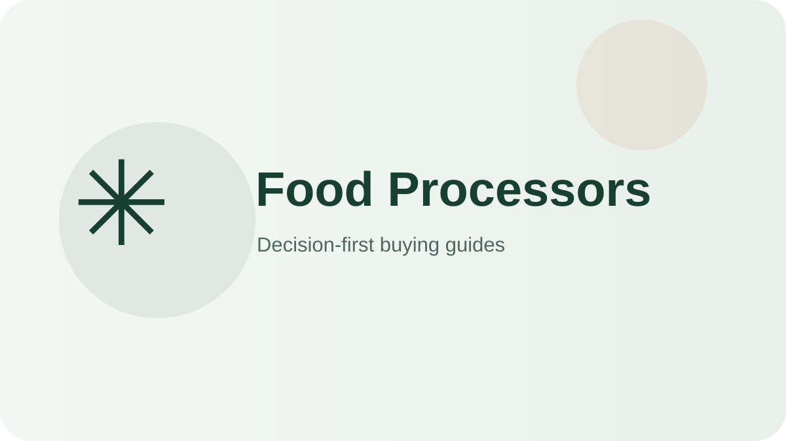

Best classic full-size processor
Cuisinart 14-Cup Food Processor DFP-14BCNY
You prep family-size batches.
Check on AmazonChoose food processors by bowl capacity, feed-tube width, blade/disc set, motor torque, and dishwasher-safe parts—not by feature count alone.

These products cover distinct use cases so you can quickly rule in—or rule out—the right format.
You prep family-size batches.
Check on Amazon
You do frequent high-volume prep.
Check on Amazon
You want versatile family prep without a huge bowl.
Check on Amazon
You dislike loose accessory clutter.
Check on Amazon
You need occasional slicing/chopping cheaply.
Check on AmazonYou chop, shred, and sauce weekly without batch-cook volume.
Check on AmazonYou want big-batch capacity, many blades, and low noise.
Check on AmazonA decision-first shortlist for everyday buyers, with clear trade-offs instead of feature-count rankings.
Read guide →Compact picks and space-saving buying rules for apartments, dorms and crowded counters.
Read guide →Larger-capacity options and the capacity rules that matter when several people share one appliance.
Read guide →Value-focused picks that prioritize the features you actually use and skip expensive extras.
Read guide →A practical guide to sizing, features, cleanup, durability and avoiding overbuying.
Read guide →A side-by-side decision framework for separating meaningful differences from marketing noise.
Read guide →A practical after-use routine, deep-cleaning schedule and part-replacement plan that keeps a food processor performing like new for years.
Read guide →The most common ways buyers overspend or under-buy when choosing a food processor, with the decision rule that prevents each one.
Read guide →A line-item look at what higher prices buy in food processors, when the upgrade pays off daily, and when the budget pick is the smarter move.
Read guide →